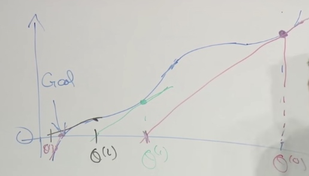

- Linear Regression (recap)
- Locally weighted regression
- Probabilitic interpretation
- Logistic regression
- Newton's method
Recap
- \((x^{(i)},y^{(i)})\) ith example
- \(x^{(i)} \in \mathbb{R}^{n+1}, y^{(i)} \in \mathbb{R}, x_0=1\)
- m = #example, n = #features.
- \(h_{0}(x)=\sum_{j=0}^{n} \theta_{j} x_{j}=\theta^{\top} x\)
- \(J(\theta)=\frac{1}{2} \sum_{i=1}^{m}\left(h_{0}\left(x^{(i)}\right)-y^{(i)}\right)^{2}\)
Feature Selection
To fit the curve in graph. We need to select appropriate feature to fit.
Feature: # different x. x1, x2... xm.
Locally Weighted (Linear) Regression
Another problem different to address whether the data fit well or not by just a straight line.
It is slightly difficult to find a curve to fit the whole line.
- Paramatric Learning Algorithms
- Fit fixed set of parameters(\(\theta_i\)) to data.
- Non-parametric Learning Algorithms
- Amount of data you need to keep grows with size of data.
To make a prediction of a certain value of x.
-
What we do in LR: fit \(\theta\) to minimize cost function \(\frac{1}{2} \sum_{i}\left(y^{(i)} \cdot \theta^{T} x^{(i)}\right)^{2}\). Then return \(\theta^T x\)
-
In locally weighted regression: fit \(\theta\) to minimize \(\sum_{i=1}^{M} \omega^{(i)}\left(y^{(i)}-\theta_{x}^{\top(i)}\right)^{2}\). Where \(w^{(i)}\) is a weight function.

-
If \(|x^{(i)}-x|\) is small. \(w^{(i)}\approx1\). x is the location where we want to make a prediction, \(x^{(i)}\) is the input x for your ith training example.
w's value is between 0 and 1. Tells you how much you should pay attention to the \((x^{(i)},y^{(i)})\)
-
If \(|x^{(i)}-x|\) is large. \(w^{(i)}\approx0\).
When \(x^{(i)}\) is too far away from x, \(w^{(i)}\) will set the whole term to 0.
Just like in the green line, the effect of red line will be eliminated to the least.
Lets see a smaller training set.
The shape of \(w^{(i)}\) looks like green line. (shape of Gaussian)
One last thing: How to choose the wigth of Gaussian density?
- Now we introfuce the bandwidth parameter \(\tau\)
- \(w^{(i)}=\exp \left(-\frac{\left(x^{(i)}-x\right)^{2}}{2 \tau^{2}}\right)\)
- We will play with \(\tau\) to fit with data set.
We tend to use locally weighted regression when we have a relatively low dimensional dataset. When the number of features is not too big.
Probabilistic Interpretation
Why least squares in \(J(\theta)=\frac{1}{2} \sum_{i=1}^{m}\left(h_{0}\left(x^{(i)}\right)-y^{(i)}\right)^{2}\)?
Assume \(y^{(i)}=\theta^{T} x^{(i)}+\epsilon^{(i)}\) \(\epsilon\) is an error term that denotes onmodel effects, random noise.
We also assume \(\epsilon^{(i)} \sim \mathcal{N}\left(0, \sigma^{2}\right)\)(Normal distribution, also we call this Gaussian distribution)
The probabily density of \(\epsilon^{(i)}\) is
\[p\left(\epsilon^{(i)}\right)=\frac{1}{\sqrt{2 \pi} \sigma} \exp \left(-\frac{\left(\epsilon^{(i)}\right)^{2}}{2 \sigma^{2}}\right)
\]
This probability density integrates to 1.
A huge assumption we are going to make is the \(\epsilon^{(i)}\) is IID(independently and identically distributed). Which means the error term for one house is different from the error term for another.
This implies
\[p\left(y^{(i)} \mid x^{(i)} ; \theta\right)=\frac{1}{\sqrt{2 \pi} \sigma} \exp \left(-\frac{\left(y^{(i)}-\theta^{T} x^{(i)}\right)^{2}}{2 \sigma^{2}}\right)
\]
The notation \(p\left(y^{(i)} \mid x^{(i)} ; \theta\right)\) indicates that this is the distribution of \(y^{(i)}\) given \(x^{(i)}\) and parameterized by \(\theta\). We should not condition on \(\theta\) since \(\theta\) is not a random variable.
In other words, we can say:
\[y^{(i)} \mid x^{(i)} ; \theta \sim \mathcal{N}\left(\theta^{T} x^{(i)}, \sigma^{2}\right)
\]
Which means given \(x^{(i)}\) and \(\theta\), the value of y will depends on Gaussian Distribution. \(\theta^{T} x^{(i)}\) is the true price and \(\sigma^{2}\) is the noise.
Likelihood of Theta
The likelyhood function of theta is:
\(L(\theta)=L(\theta ; X, \vec{y})=p(\vec{y} \mid X ; \theta)\)
Note that by th eindependence assumption on the \(\epsilon^{(i)}\)'s, this can also be written:
\[\begin{aligned}
L(\theta) &=\prod_{i=1}^{n} p\left(y^{(i)} \mid x^{(i)} ; \theta\right) \\
&=\prod_{i=1}^{n} \frac{1}{\sqrt{2 \pi} \sigma} \exp \left(-\frac{\left(y^{(i)}-\theta^{T} x^{(i)}\right)^{2}}{2 \sigma^{2}}\right)
\end{aligned}
\]
What's the difference between likelihood and probability?
Ans: likelihood of the parameters is exactly the same thing as the probability of the data. The reason why we talk in two things is if we think of the training set the data as a fixed thing and varying parameters theta then we say likelihood. Whereas the parameter theta is fixed and maybe varying the data, then we say probability. likelihood is the function of parameters and probability is the function of data.
Attention: theta is not random variable.
Log Likelihood
MLE
One of the well-tested methods in statistics estimating parameters is to use maximum likelihood estimation(MLE). Which means choose theta to maximize the likelihood \(L(\theta)\).
One natural way to choose theta is to choose whatever value of theta has a highest likelihood. In other words, choose a value of theta so that that value of theta maximizes the probability of the data.
Least Square Error
It's kindly easy to mazimize the log likelihood rather than the likelihood capital L.
\[\begin{aligned}
\ell(\theta) &=\log L(\theta) \\
&=\log \prod_{i=1}^{n} \frac{1}{\sqrt{2 \pi} \sigma} \exp \left(-\frac{\left(y^{(i)}-\theta^{T} x^{(i)}\right)^{2}}{2 \sigma^{2}}\right) \\
&=\sum_{i=1}^{n} \log \frac{1}{\sqrt{2 \pi} \sigma} \exp \left(-\frac{\left(y^{(i)}-\theta^{T} x^{(i)}\right)^{2}}{2 \sigma^{2}}\right) \\
&=n \log \frac{1}{\sqrt{2 \pi} \sigma}-\frac{1}{\sigma^{2}} \cdot \frac{1}{2} \sum_{i=1}^{n}\left(y^{(i)}-\theta^{T} x^{(i)}\right)^{2}
\end{aligned}
\]
Since log is a strictly monotonically increasing function.
The first term is a constant, because our variable is theta. What we should do is choose theta to make the second term largest. That is choose theta to minimize \(\frac{1}{2} \sum_{i=1}^{n}\left(y^{(i)}-\theta^{T} x^{(i)}\right)^2\). Which is just \(J(\theta)\), the cost function of linear regression.
So the prove shows that, choosing the value of theta to minimize the least squares errors, that is just finding the MLE for the parameters theta under this set of assumptions we made. Which means the MLE is completely equal to find the least squares errors. If you are willing to assume that error terms are Gaussian and IID and you are going to use MLE then you should use least squares. Most cases we can assume error terms are IID.
Classification Problem
Binary Classification
\(y\in\{0,1\}\)
In this graph, if we do lnear regression, we may draw a line like this.
But when we add another point, we will see linear regression is not a good point for classfication.
Logistic Regression
What we want is to let output value of \(h_\theta(x)\in[0,1]\)
\[h_{\theta}(x)=g\left(\theta^{T} x\right)=\frac{1}{1+e^{-\theta^{T} x}}
\]
Where
\[g(z)=\frac{1}{1+e^{-z}}
\]
is called the logistic function or sigmoid function Output values between 0 and 1.
In linear regression, \(h_\theta(x)=\theta^Tx\). What logistic regression will do is set \(\theta^Tx\) between 0 and 1.
To design a learning algorithm, sometimes we have to choose form of hypothesis.
So why do we just choose the logistic function?
\[\begin{aligned}
&P(y=1 \mid x ; \theta)=h_{\theta}(x) \\
&P(y=0 \mid x ; \theta)=1-h_{\theta}(x)
\end{aligned}
\]
These two equations can be compressed as one
\[p(y \mid x ; \theta)=\left(h_{\theta}(x)\right)^{y}\left(1-h_{\theta}(x)\right)^{1-y}
\]
(Just think about y = 1 and y = 0 )
So the likelihood \(L(\theta)\) will be like
\[\begin{aligned}
L(\theta) &=p(\vec{y} \mid X ; \theta) \\
&=\prod_{i=1}^{n} p\left(y^{(i)} \mid x^{(i)} ; \theta\right) \\
&=\prod_{i=1}^{n}\left(h_{\theta}\left(x^{(i)}\right)\right)^{y^{(i)}}\left(1-h_{\theta}\left(x^{(i)}\right)\right)^{1-y^{(i)}}
\end{aligned}
\]
Again, we come to the "log likelihood". And end up with
\[\begin{aligned}
\ell(\theta) &=\log L(\theta) \\
&=\sum_{i=1}^{n} y^{(i)} \log h\left(x^{(i)}\right)+\left(1-y^{(i)}\right) \log \left(1-h\left(x^{(i)}\right)\right)
\end{aligned}
\]
Now we need to choose theta to maximize \(l(\theta)\). Which is called Batch gradient assent:
\[\theta_j := \theta_j + \alpha \frac {\partial} {\partial\theta_j} l(\theta)
\]
What's the difference between this and linear regression we saw last time?
\[\theta_j := \theta_j - \alpha \frac {\partial} {\partial\theta_j} J(\theta)
\]
- \(l(\theta)\) and \(J(\theta)\)
- One is minimize and one is maximize.
After calculating partial derivitive, we can get
\[\begin{aligned}
\frac{\partial}{\partial \theta_{j}} \ell(\theta) &=\left(y \frac{1}{g\left(\theta^{T} x\right)}-(1-y) \frac{1}{1-g\left(\theta^{T} x\right)}\right) \frac{\partial}{\partial \theta_{j}} g\left(\theta^{T} x\right) \\
&=\left(y \frac{1}{g\left(\theta^{T} x\right)}-(1-y) \frac{1}{1-g\left(\theta^{T} x\right)}\right) g\left(\theta^{T} x\right)\left(1-g\left(\theta^{T} x\right)\right) \frac{\partial}{\partial \theta_{j}} \theta^{T} x \\
&=\left(y\left(1-g\left(\theta^{T} x\right)\right)-(1-y) g\left(\theta^{T} x\right)\right) x_{j} \\
&=\left(y-h_{\theta}(x)\right) x_{j}
\end{aligned}
\]
Above, we used the fact that \(g'(z) = g(z)(1-g(z))\), the property of sigmoid function. Then we get
\[\theta_{j}:=\theta_{j}+\alpha\left(y^{(i)}-h_{\theta}\left(x^{(i)}\right)\right) x_{j}^{(i)}
\]
We choose logarithm to ensure that there is no local optimal area but only global area.
Now we can see though the \(h_\theta(x)\) becomes different, the surface level of equation turns out to be the same.
This is a general property of much bigger class of algorithms called generalized linear models(GLM).
We cannot use method like normal equations in linear regression to find the best value ot theta.
We should use an algorithm like iterative optimization algorithm such as gradient ascent or we will see in the second Newton's method.
Newton's Method
Gradient ascent is a good alg but it should take many baby step, whereas Newton's method allow us to take much bigger jump.
Assume we need 100 0r 1000 iteration to get value in iteration, in Newton's Method, we only need 10 iterations to get very good value of theta.
The problem Newton's Method solves would be: We have f, and we want to find a \(\theta\), st. \(f(\theta) = 0\)
What we really want is the maximize \(l(\theta)\). I.e., we want \(l'(\theta) = 0\)
An example of Newton's Method
We start at \(\theta^{(0)}\), and we want to find the goal.

We make tangent on the start point, and find the point of intersection of x axis and the tangent. Then use the point of intersection as the new point then make tangent.
So \(\theta^{(1)} = \theta^{(0)} - \Delta\). \(f'(\theta^{(0)}) = \frac {f(\theta^{(0)})} {\Delta}\)
Let \(f(\theta) = l'(\theta)\)
\[\theta:=\theta-\frac{\ell^{\prime}(\theta)}{\ell^{\prime \prime}(\theta)}
\]
Newton's method is "quadratic convergence"
0.01 error --> 0.0001 error --> 0.00000001 error
When theta is a vector:
Generalization of Newton's method to thsi multidimensional setting is given by
\(\theta:=\theta-H^{-1} \nabla_{\theta} \ell(\theta)\)
H is an n*n matrix called the Hessian, whose entries are given by
\(H_{i j}=\frac{\partial^{2} \ell(\theta)}{\partial \theta_{i} \partial \theta_{j}}\)
Disadvantage
When in high dimensional, theta isa vector, each step of Newton's Method becomes much more expensive.